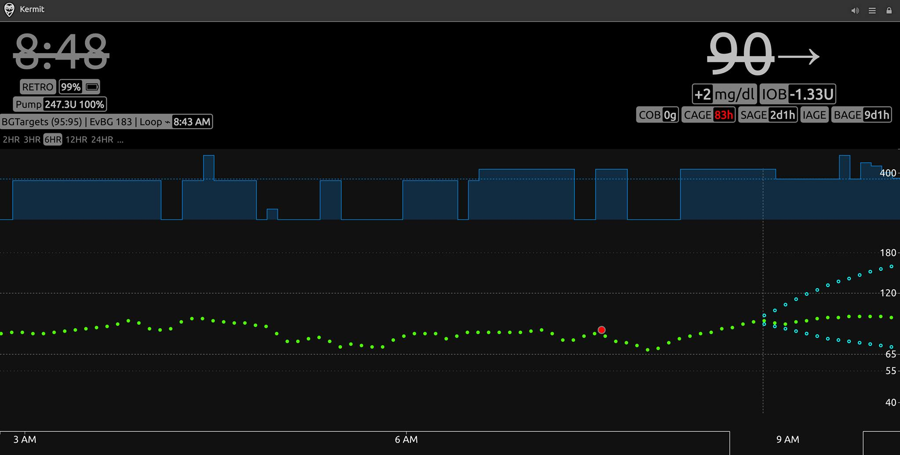
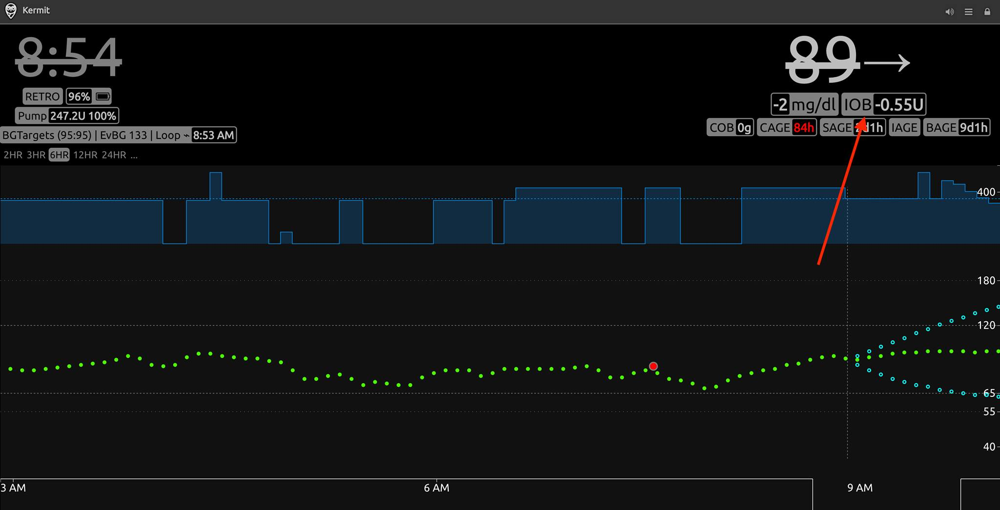

Optimizing and Troubleshooting Your Settings¶
Morning IOB¶
Highlights
- Check your morning IOB: if it is positive, increase your basal rates, if it is negative, decrease your basal rates.
One of the easiest ways of optimizing your basal rates is by checking your IOB when you wake up in the morning. iAPS uses your basal profile as its net zero. If iAPS needs to give you more insulin overnight than your set basal rates, your IOB will be positive. Likewise, if you need less insulin overnight than your current basal rates, it will be negative. You can adjust your basal profile by 10%, and reassess the impact the following morning. Below are some nightscout images showing the impact of changing basal rates on IOB. You can also view your IOB on iAPS itself.
 
Inaccurate basal rates can impact your control in a number of ways. Their values determine how much insulin iAPS delivers with temporary basal rates and autobolus functions. If you consistently have negative IOB in the morning, you are at danger of having lows when your blood sugar rises above your correction range.
Note that iAPS does adjust your basal profile with autotune, but this system is slow and has strict limits to prevent too much divergence from your set settings. If your basal rates are widely inaccurate, its best to make manual changes.
Site Change or Failure¶
Highlights
- Pump changes can temporarily impact control.
- Pump failures can negatively impact control for hours. Turn off closed loop when failure is discovered, and only turn back on when a new pump is installed.
Pump site changes can negatively impact your immediate glycemic control. Different delivery sites vary in their ability to absorb insulin, impacting your perceived insulin sensitivity. iAPS should be able to accommodate to this change by resetting its Autosens meaurements (assuming "Rewind Resets Autosens" is on) and adapting as needed.
Pump failures can result from kinks or improper insertion of the cannula. As a result of a pump failure, iAPS may come under the impression that more insulin is on board the patient than what was delivered, leading to sustained highs even after the pump is replaced.
When you find out your pump has failed, immediately turn off closed loop to prevent iAPS from trying to deliver more insulin. Upon your next pump installation, you can then start closed loop and be patient. iAPS will wait for the calculated insulin on board to drop before continuing to deliver insulin.
Low Treatment¶
Highlights
- Enter carbs for treatment into iAPS but do not bolus for it
- Consider reducing your profile ISF or Adjustment Factor if Dynamic ISF is enabled.
Low blood sugar events can happen from time to time, but you will typically not require as much carbs to treat your lows as opposed to MDI or using a pump. When you treat a low, you should still enter the carbs consumed into the iAPS system so its autotune functionality can make better choices on your ICR, ISF and basal rates.
If you experience a roller coaster pattern of highs and lows after treating, your insulin sensitivity factor (ISF) is most likely to blame. Look to making your insulin sensitivity less aggressive by 10% or reducing your adjustment factor by 0.1 increments.